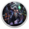

 Legend of Keepers: Career of a Dungeon Manager
Detalles
 |
|
| Tiempo de juego | No Jugado |
| Última actividad | Nunca |
| Añadido | 15/12/2023 15:26:06 |
| Modificado | 15/12/2023 15:27:48 |
| Estado de finalización | Not Played |
| Librería | Gog |
| Fuente | GOG |
| Plataforma | PC (Windows) |
| Fecha de lanzamiento | 18/03/2020 |
| Puntuación de la Comunidad | 64 |
| Puntuación de la Crítica | 65 |
| Puntuación de usuario | |
| Género | Fantasy Role-playing Strategy |
| Desarrollador | Goblinz Studio |
| Editor | Goblinz Publishing |
| Característica | Achievements Cloud Saves Controller support Single Player |
| Enlaces | Foro Página de la tienda PCGamingWiki |
| Tag | 2D Board Game Dark Difficult Dungeon Crawler Fantasy Lovecraftian Management Pixel Graphics Roguelike Roguelite Turn-based |
Descripción

Newsletter

In this original mix of Dungeon Management and Roguelite, you will lead your career as a Dungeon Manager!
Features
- Join the Dungeons Company and climb the corporate ladder
- Crush so-called "heroes" and protect the company's treasures
- Hire monsters, manage your employees and your stock of traps
- Deal with employee strikes and other fun events
RogueDefender
Each run will be different but players will keep some of their Master's bonuses between runs. Like we've already mentioned, our game is a mix between Roguelite and Dungeon Management. How did we achieve that? By running many tests to find the perfect balance between management and dungeon phases!Dungeon Phase
First, you will have to plan your defense against a group of adventurers. Check their stats and resistances, then place the best traps and monsters to defeat them! When you think your dungeon is ready, let the crawl begin!You will then be able to watch those heroes die! It's a reversed dungeon crawler: heroes will move through your dungeon and will trigger the traps you placed. When a group of adventurers encounters a group of monsters you positioned in your dungeon, a turn-based fight will happen!
Games/Series that inspired us:
HeroQuest (Board Game), Naheulbeuk (French audio series), Kaamelott (the best French series), Monty Python (English series).Video games: Darkest Dungeon, Slay the Spire, Dungeon Keeper, Final Fantasy, Divinity, For the King, Chroma Squad, Battle Brothers, West of Loathing and so many more...